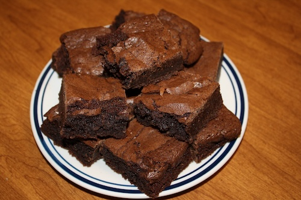

This is a public domain image.
Introduction
My friend Bertha loved to eat brownies. When she grew up because of all of these brownies she got very sick. Her family begger her to stop, but she didn't. These brownies were so good that she risked her life for them. Now that she has crossed into the big blue sky it is my duty to carry on this recipe that was worth her life.